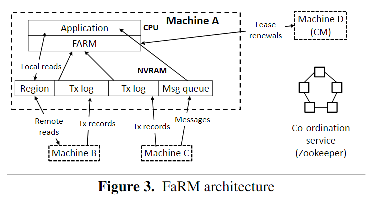
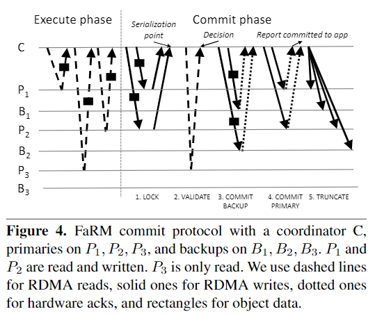
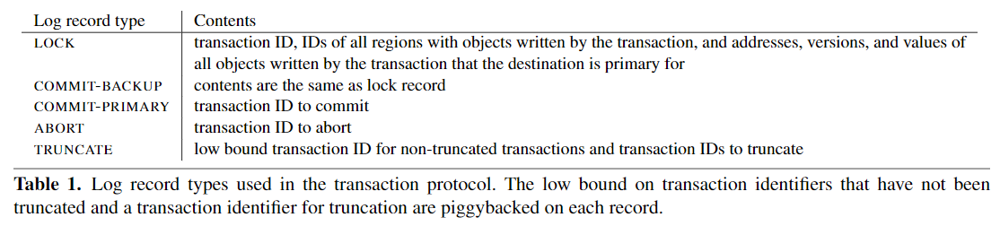
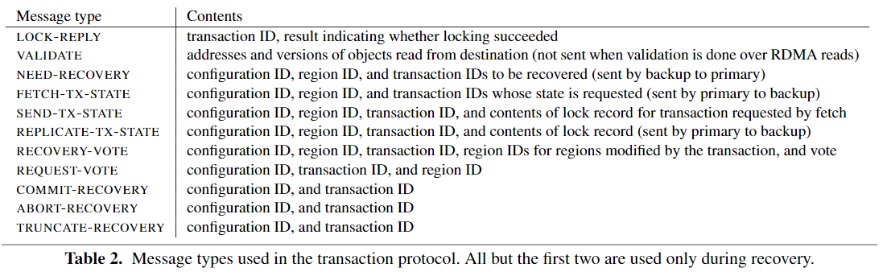
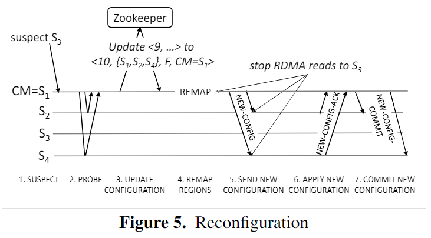
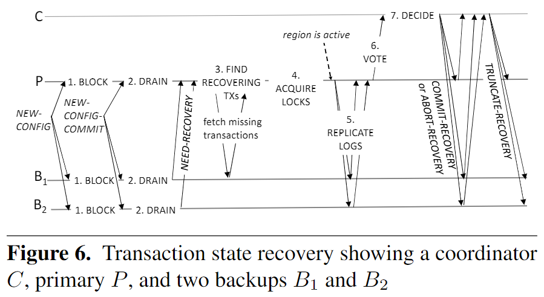

6.824 的第十篇论文是 FaRM——一个通过为分布式事务提供序列化、高性能、持久性和高可用性的主存分布式计算平台。
FaRM 利用以下两种硬件趋势做到这一点：
- 非易失 DRAM（通过将 DRAM 写入 SSD 实现）
- 快速 RDMA
这消除了存储和网络瓶颈，却带来了新的 CPU 瓶颈。FaRM 通过遵循以下三个原则来解决这一 bottleneck：
减少消息量
FaRM 允许事务与存储对象跨机器分布；
使用具有 replica 的垂直 Paxos 以及直接与 Primary/Backup 通信的非复制 coordinator；
使用乐观并发控制和四阶段提交协议(4PC: lock, validation, commit backup, commit primary)。
使用单侧 RDMA 进行读写，而不是传递消息
不使用远程 CPU，且避免了大部分 local CPU 开销。但这样一来传统的基于 CPU 的 failure-recovery 就失效了，需要考虑新的 failure-recovery protocol：
- precise membership：FaRM servers 不根据它们的 lease 到期而拒绝传入的请求，因为请求由不支持 lease 的网卡(NIC)提供服务；使用 precise membership 来确保机器同意当前的成员配置，并只向配置中的成员机器发送 RDMA；
- reservations：因为事务记录被写入日志而不涉及 CPU，FaRM 使用 reservations 来确保在开始 commit 之前，日志中有足够空间用于 commit 和 truncate 事务。
有效利用并行性
它将每个状态的恢复均匀地分布在集群中，并在每台机器之间并行恢复。它使用两个优化来允许事务执行与恢复并行进行：
- 事务在锁定恢复阶段之后开始访问受故障影响的数据；
- 不受故障影响的事务继续执行而不会阻塞。
硬件趋势
非易失 DRAM
发生电源故障时，分布式不间断电源(UPS)使用电源中的能量将内存中的数据保存到 SSD，从而提高 DRAM 耐用性。
RDMA 网络
FaRM 尽可能使用单侧 RDMA 操作，从而有效减少了 CPU 开销与需传递的消息数量——RPC 需要的消息量是单侧 RDMA 的两倍。
编程模型
FaRM 提供全局地址空间的抽象，其 API 为事务提供对对象的透明访问。
FaRM 事务使用乐观并发控制。对数据的修改会先在本地缓存，且只在成功提交后才对其他事务可见。
FaRM 为所有成功提交的事务提供严格的可串行化：
- 单对象读取是原子的：只读取已提交的值，且由事务写入的对象的读取返回最新写入的值。FaRM API 还为单对象 RO 事务提供无锁读取和位置提示，使程序员能够在同一组机器上共同定位相关对象。
- 多对象读取不保证原子性：保证事务不会提交，同时确保提交的事务是严格可串行化的。这样可以将一致性检查推迟到提交时间。
整体架构

协调与配置
FaRM 使用 Zookeeper 作为协调服务。
FaRM 实例会随着时间的推移更新配置。配置是一个元组
(i, S, F, CM)，其中 i
是配置标识符，S
是配置中的机器集合，F 是从机器到
failure region 的映射，CM
是配置管理器，且 CM ∈ S。
CM(Configuration Manager) 实现管理租约、检测故障或协调恢复。每次配置更改时，CM 都会调用 Zookeeper 来更新配置以达成共识。
内存管理
FaRM 中的地址空间由多个 2GB 大小的 region 组成。每个 region 分布在一个 primary 和 \(f\) 个 backup 上，对于每个机器而言，region 存储在其 DRAM 中并且可以被 RDMA 读取。
所有的 read 都落到 primary 上（如果 region 在本地，则直接通过本地内存访问；反之，则使用单侧 RDMA 读取）。
CM 存储 region 标识符到其 primary/backup 的映射。这些映射可被其他机器按需获取、缓存到本地并复制。
region 分配
机器联系 CM 以分配新 region。CM 为 new region 分配一个标识符，并为其选择 replicas。对 replica 的选择应尽量均衡负载，并且满足：
- 有足够的容量；
- 每个 replica 位于不同的 failure region 中；
- 当应用程序指定局部性约束时，该 region 与目标 region 位于同一位置。
然后 CM 利用 2PC 进行 region 分配。
Log/Msg 队列
每台机器存储一个基于 FIFO 的环形缓冲区，用于事务日志或消息队列。每个接收者都有单独的 log queue 和 msg queue。发送者使用单侧 RDMA 将记录附加到日志尾部，写入由 NIC 发送 ack，不涉及 CPU；接收者定期轮询日志的头部以处理记录。
分布式事务与复制
下图展示了 FaRM 事务提交时间线。

执行阶段
- 事务使用单侧 RDMA 读取对象并写入本地缓存。
- coordinator 记录所有访问对象的地址和版本号。
- 对于与 coordinator 在同一台机器上的 primary/backup，对象对日志的读取和写入使用本地内存访问而不是 RDMA。
提交阶段

Lock：coordinator 将 LOCK 记录写入每台涉及写的 primary。primary 通过尝试使用 compare-and-swap 将对象在指定版本处 lock，并回复是否成功获取所有锁。若失败，则中止事务；
Validate：coordinator 通过从 primary 中读取 被事务读取但未写入的所有对象 的版本来执行 VALIDATE。如果任何对象已更改，则中止事务。
默认使用单侧 RDMA 读，而对于拥有 \(t_r\) 以上对象的 primary，则用 RPC（阈值 \(t_r\) 反映了 RPC 相对于 RDMA 读取的 CPU 成本）。
Commit Backup：coordinator 将
COMMIT-BACKUP记录写入所有 backup 的日志，然后等待来自 NIC 硬件的 ack，无需 CPU 干涉；Commit Primary：在确认所有
COMMIT-BACKUP写入后，coordinator 将COMMIT-PRIMARY记录写入每个 primary 的日志中。接下来 primary 更新对象及其版本并 unlock。coordinator 会在收到至少一个 primary 的 ack 时向应用程序报告完成；Truncate：primary/backup 将记录保留在其日志中直到被截断。coordinator 在收到所有 primary 的确认后，它会在其他日志记录中捎带截断事务的标识符会从而延迟截断。backup 在截断时将更新应用于其对象副本。

故障恢复
故障检测
FaRM 使用 lease 来检测故障。每台机器都在 CM 处持有 lease，而 CM 在其他每台机器上都持有 lease。任何 lease 到期都会触发故障恢复。FaRM 使用 3 次握手授予 lease。每台机器都会向 CM 发送一个 lease 请求，CM 在授权响应中捎带 CM 的 lease 请求，最后机器回复 CM 的 lease 许可。
FaRM 租期很短，以保证高可用性。
FaRM 为 lease 维护一个专用消息队列，以及时处理请求。可靠传输将要求 CM 为每台机器添加一个额外的队列。
默认情况下，每过租期的 1/5 会尝试更新租约，以防止消息丢失。还必须及时在 CPU 上安排续租。 FaRM 使用以最高用户空间优先级运行的专用租用管理器线程。
重新配置
单侧 RDMA 要求重新配置协议使用 lease 实现一致性，服务器在回复访问对象的请求之前检查它们是否持有对象的lease。从配置中被驱逐的服务器存储的对象在 lease 到期之前不被改变。
但由于 CPU 无法检查是否持有 lease，且 NIC 也不支持 lease。这一问题可用 precise membership 来解决：发生故障后，新配置中的所有机器必须在允许对象变更之前就其成员关系达成共识。配置内的机器不会发起/接受配置外机器的 RDMA 请求。

Suspect：CM 怀疑机器 lease 到期时，会启动重新配置，并开始阻止所有外部 client 请求；机器怀疑 CM lease 到期时，它首先要求 CM backup 中的一个启动重新配置。如果超时，那么它会自己尝试成为新的 CM 并重新配置；
Probe：新 CM 向配置中的所有机器发出 RDMA 读取（任何读取失败的机器也被 SUSPECT），仅当新 CM 获得大多数 probe 的响应时，它才会继续进行重新配置。
这确保了如果网络被分区，CM 不会在较小的分区中。
Update Configuration：新 CM 更新 Zookeeper 中存储的配置数据。使用 znode 序列号来实现原子 compare-and-swap。
这确保了即使多台机器同时尝试从具有标识符 c 的配置更改配置，也只有一台机器可以成功地将系统移动到具有标识符 c +1 的配置（并成为 CM）。
Remap Regions：新 CM 重新分配 region。若 primary 故障，它会将某个 backup 提升为新的 primary，以减少恢复时间；
Send New Configuration：CM 向所有机器发送
NEW-CONFIG消息。如果 CM 改变，NEW-CONFIG还会重置 lease 协议；Apply New Configuration：当机器接收到配置标识符大于自己的配置标识符的
NEW-CONFIG时，它会应用新配置，此后拒绝任何配置外机器的请求。机器用NEW-CONFIG-ACK消息回复 CM。如果 CM 发生了变化，则会向新 CM 重新授予/请求 lease；Commit New Configuration：一旦 CM 接收到所有
NEW-CONFIG-ACK消息，它就会等待配置外的机器的 lease 都已过期。然后 CM 向所有配置成员发送NEW-CONFIG-COMMIT（同时授予 lease）。之后所有成员都解除 Suspect 中对外部 client 请求的阻止，并启动事务恢复。
事务状态恢复
FaRM 在配置更改后使用日志来恢复事务状态。下图为事务恢复时间线：

Block Access To Recovering Regions：当 region 的 primary 发生故障时，其中一个 backup 会在重新配置期间提升为新的 primary。在更新 region 的所有事务都反映在新的 primary 上之前不能允许访问该 region，直到第 4 步 Lock Recover 结束；
Drain Logs：所有机器在收到
NEW-CONFIG-COMMIT消息时都会处理其日志中的所有记录。完成后，它们将最新配置标识符记录在变量LastDrained中。FaRM 事务具有在 commit 开始时分配的唯一标识符，配置标识符小于或等于LastDrained的事务的日志记录将被拒绝。NIC 会向 COMMIT-BACKUP/PRIMARY 发送 ack，无论它们是在何种配置中发出的。由于 coordinator 在向应用程序公开更新并报告成功之前只等待这些 ack，因此 FaRM 不能仅仅拒绝来自旧配置的消息来达到跨配置一致性。
Finding Recovering Transactions： recovering transaction 是指在 commit 阶段进行跨配置更改的事务。需要在 Drain Logs 期间检查所有日志记录以确定 RT 的集合。所有机器必须就给定事务是否为 RT 达成一致。CM 在 Probe Read 阶段读取每台机器上的
LastDrained。对于自LastDrained以来 replica 归属变化的每个 region \(r\)，CM 在NEW-CONFIG消息中捎带两个配置标识符：LastPrimaryChange[r]：primary 最后一个配置标识符；LastReplicaChange[r]：所有 replica 最后一个配置标识符。
在配置 \(c-1\) 中开始提交的事务在配置 \(c\) 中恢复，除非：
- 包含由事务读取对象的所有 region \(r\)，
LastPrimaryChange[r] < c； - 包含由事务修改对象的所有 region \(r'\)，
LastReplicaChange[r'] < c； - 配置 \(c\) 中 coordinator 尚未被移除。
region 的每个 replica 都会向 primary 发送一条
NEED-RECOVERY消息。Lock Recover：每个 region 的 primary 一直等待，直到本地机器 Drain Log 结束并且从每个 replica 接收到
NEED-RECOVERY消息，以构建影响该 region 的完整 RT 集。然后它对 RT 分片。并行地，primary 线程从 backup 中获取尚未存储在本地的事务日志记录并给相关对象上锁。当一个 region 的 Lock Recover 完成后，该 region 可访问；Replicate Log Records：primary 线程通过向 backup 发送
REPLICATE-TX-STATE消息来复制日志记录，以免丢失事务；Vote：coordinator 根据 region 的投票决定 commit/abort 事务。投票由 primary 发起。primary 线程将
RECOVERY-VOTE消息发送到 coordinator 中的对等线程。- 若 replicas 看到
COMMIT-PRIMARY或COMMIT-RECOVERY，则投票commit-primary； - 否则，若 replicas 看到
COMMIT-BACKUP但没看到ABORT-RECOVERY，则投票commit-backup； - 否则，若 replicas 看到
LOCK记录且没有ABORT-RECOVERY，则投票lock； - 否则，它会投票
abort。
- 若 replicas 看到
Decide：
- 若 coordinator 收到来自所有 region 的
commit-primary投票，则提交事务； - 否则，等待所有 region 投票。若至少一个 region 投票
commit-backup，且由事务修改的所有其他 region 投票lock、commit-backup或truncated，则提交； - 否则，中止。
然后它向所有 replicas 发送
COMMIT-RECOVERY或ABORT-RECOVERY。在 coordinator 收到来自所有 primary/backup 的 ack 后，它会发送一条TRUNCATE-RECOVERY消息。- 若 coordinator 收到来自所有 region 的
数据恢复
当 primary 的所有 region 可访问时，每台机器都会向 CM 发送
REGIONS-ACTIVE 消息。然后 CM 向配置中的所有机器发送
ALL-REGIONS-ACTIVE 消息，此时开始数据恢复。
如果对象的版本高于本地版本，则 replicas 会通过 CAS 上锁，更新后解锁；否则，不应用恢复。
分配器状态恢复
FaRM 分配器将 region 拆分为 block (1 MB)，这些 block 用作分配小对象的 slab。它保留了两个元数据：
- block header：包含对象大小；
- slab 空闲列表。
分配新 block 时，BH 会复制到 replica 中。由于块头用于数据恢复，因此新
primary 在收到 NEW-CONFIG-COMMIT 后立即将它们发送到所有
replicas。
slab 空闲列表仅保留在 primary 中，以减少对象分配的开销。
每个对象的 header 中都有一个 bit 位，表示该对象已分配或被清理。这一
bit 也会在事务提交期间被复制。通过并行扫描故障 region 中的对象，在新的
primary 上恢复空闲列表。为了尽量减少对事务 lock recovery
的影响，分配器恢复在收到 ALL-REGIONS-ACTIVE 后开始，在 slab
空闲列表恢复后释放对象。
总结
这是 6.824 事务与复制的最后一个系列了，用 RDMA 而不是 RPC 很有创新点。